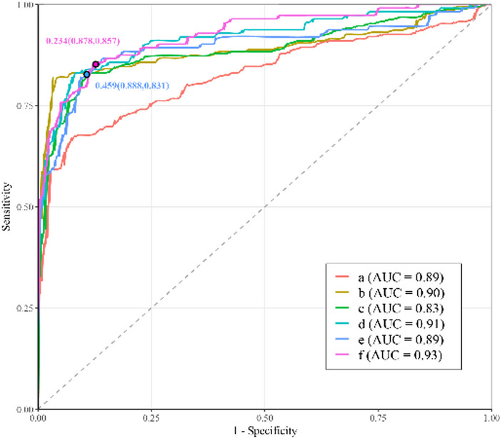
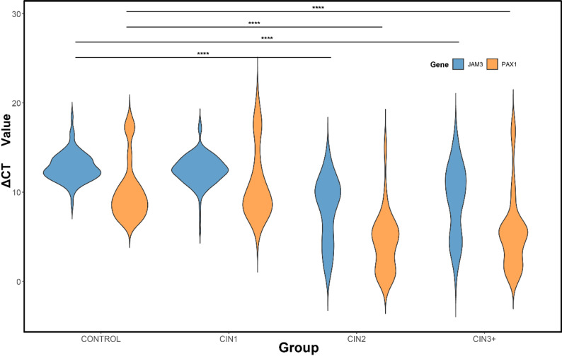
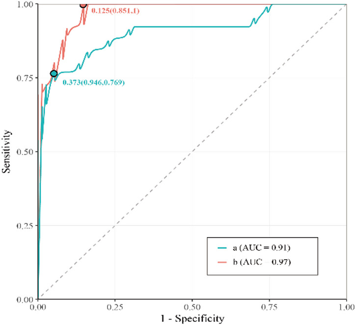

1Background & Objective
- Problem: TCT subjective; HPV low specificity — need objective, non-invasive triage.
- Methylation: objective, low-cost, sample-friendly biomarker for early screening.
- Objective: evaluate combined PAX1/JAM3 methylation for CIN diagnosis and triage in Xinjiang.
2Study Design & Cohort
431
samples
100
SOX1 sub-cohort
1
region (Xinjiang)
PAX1/JAM3 qMSP+
HPV / cytology+
pathology gold std.
- Cohort: control 81 · CIN1 161 · CIN2 77 · CIN3 96 · cancer 16.
- Sub-cohort: 100 stratified samples for PAX1/SOX1 panel validation.
- Endpoint: CIN2+ / CIN3+ detection; ROC; vs HPV & cytology.
- qMSP: bisulfite conversion + methylation-specific primers; ΔCT = Ctgene − CtGAPDH.
- Comparator: HPV testing & cytology (TCT) with pathology as gold standard.
- Analysis: ROC/AUC; referral rate modeling in HPV+ patients.
- Why Xinjiang: fills local evidence gap for combined methylation triage.
- Controls: normal/inflammatory cervix, pathology-confirmed.
189
CIN2+
112
CIN3+
51
methylation(+) ≤ASC-US
ΔCT lower = higher methylation; PAX1/JAM3 combined = either gene positive.
3Diagnostic Performance
| Test | Endpoint | AUC | Se % | Sp % |
|---|---|---|---|---|
| PAX1/JAM3 | CIN2+ | 0.89 | 83.1 | 88.8 |
| PAX1/JAM3 | CIN3+ | 0.93 | 85.7 | 87.8 |
| PAX1/SOX1 | CIN3+ (n=100) | 0.91 | 76.9 | 94.6 |
| PAX1/JAM3 | CIN3+ (n=100) | 0.97 | 100 | 85.1 |
PAX1/SOX1 validates methylation efficacy — promising complementary panel.
4ROC & Methylation Signal

Fig. 3 ROC — PAX1/JAM3 for CIN2+ (0.89) and CIN3+ (0.93).

Fig. 2 ΔCT violin plots — higher methylation with severity (****P<0.0001).

Fig. 4 CIN3+ ROC — PAX1/SOX1 0.91 vs PAX1/JAM3 0.97 (sub-cohort).
5Triage & Clinical Value
- Referral: among ≤ASCUS colposcopy cases (n=265), 51 methylation(+) → referral 19.3%.
- Non-HPV16/18: methylation Se/Sp for CIN2+ superior to cytology.
- Objective & low-cost: suitable for resource-limited regions (Xinjiang).
- Complements: adds molecular readout to HPV/cytology-based screening.
qMSP is objective and reproducible across operators.